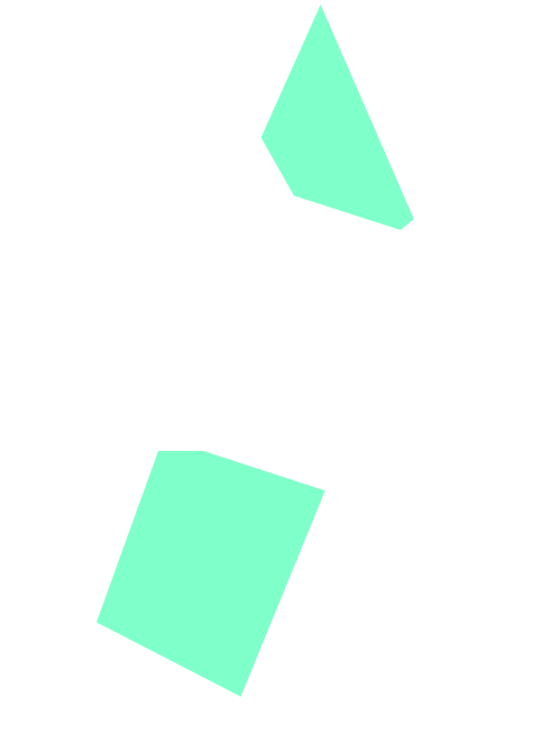
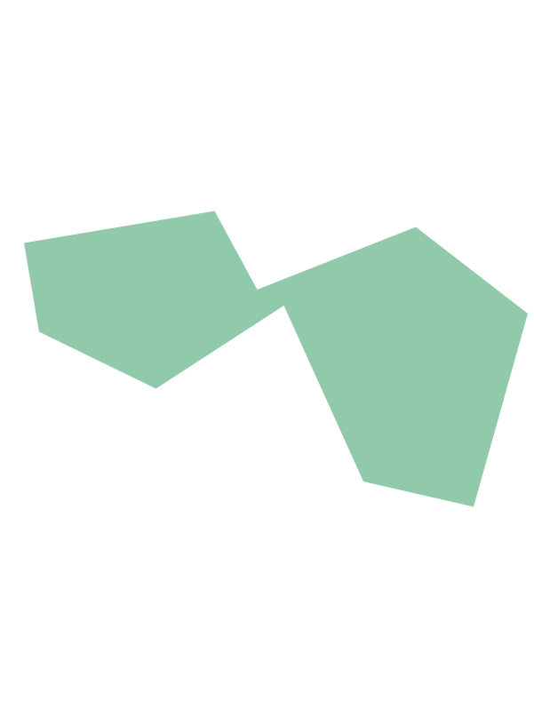
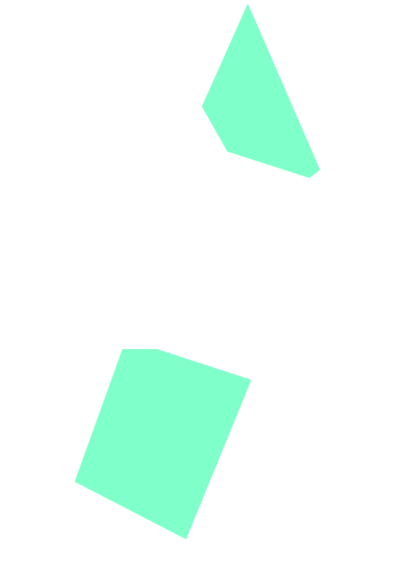
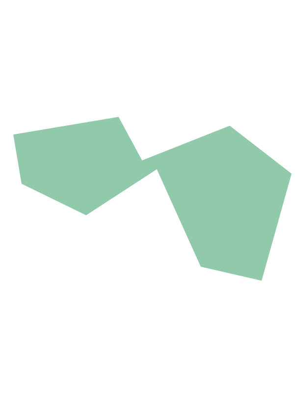

Data-probe 9
02 May 2024 (WS2)
London (UK)
Participant 9
She is the Senior Tutor and Deputy Head of Brunel Design School (Education), specialises in the areas of New Product Development (NPD) process, Innovation Strategy and Management, and Design Strategy. She is also one of the supervisor of this PhD research.
Written description:
Not provided
Picture of the probe:

 



List of components:
Oral description:
“I have tried to have all the, kind of triangle shapes because I'm trying to avoid any sphere, I feel like when it's smooth surface, it doesn't quite explain the pain. I prefer the sharp edge as the way to describe all these sharp edge that I feel. I would like to create something asymmetric. Anything relatively unstable, still too stable for me [laugh]. But it's kind of trying to explain that it's not safe or stable. It's this feeling anxious and you know, kind of feel scared every time you go to the bathroom. I used the wood rather than other the material because I feel like it's quite heavy and it does suggest this pain, I guess, that is quite important. It is quite significant for me, but I don't want it to be all one material because, the feeling is different and it's by having a mixed material it does make it feel like yes, it's more complex than just, you know, like the same all the time. I try to avoid anything that relatively smooth. OK, so that's why it end up looking like this. Yeah, OK.”